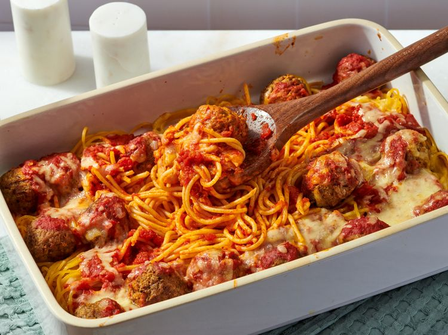

Spaghetti Meatball Bake
Return Home!

Description
This spaghetti meatball bake is an all-in-one casserole of spaghetti
with prepared spicy arrabiata sauce, meatballs, and mozzarella cheese.
Any leftovers can be cut into portions and frozen.
Ingredients
- 18 Meatballs
- 8 Oz Spaghetti
- 1 (24 Oz) jar arrabiata sauce
- 1 cup shredded mozzarella cheese
Steps
-
Preheat the oven to 350F (180 Celsius). Place meatballs on baking tray
-
Bake meatballs in the preheated oven until a slight crust forms, about
15 minutes (meatballs will not be fully cooked). Cover and set aside to keep warm.
-
Meanwhile, bring a large pot of salted water to a boil and add spaghetti.
Cook for about 10 minutes, or 1 minute less than package directions for al dente
pasta, then drain thoroughly.
-
In a large casserole dish, pour about a 1/2 cup of the pasta sauce along the
bottom, then spread to coat. Add spaghetti evenly over sauce to cover the entire
bottom of the dish.
-
Arrange meatballs in rows over spaghetti, about 3 in each row for a total of 6
rows. Cover meatballs and spaghetti evenly with remaining sauce. Sprinkle with
1/2 cup mozzarella; cover dish with foil.
-
Bake in the preheated oven for 20 minutes, then remove foil. Sprinkle with
remaining cheese.
-
Return to the oven and bake until cheese is melted, about 15 minutes more.
Remove from the oven and let cool for 5 minutes before serving.